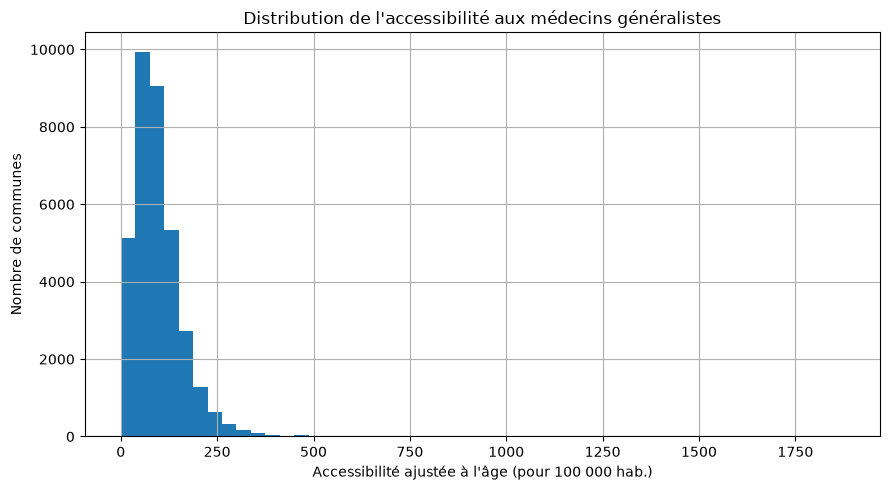

from pathlib import Path
import os
import numpy as np
import pandas as pd
import matplotlib.pyplot as plt
pd.set_option("display.max_columns", 100)Ce notebook fusionne : - la base communale complète : INSEE + FINESS-SYGEN + RPPS ; - l’indicateur d’accessibilité aux médecins généralistes.
La clé de fusion est CODGEO et la base complète reste la table principale.
Des analyses statistiques sont ensuite faites
URL_BASE_COMPLETE = (
"https://minio.lab.sspcloud.fr/emma457/"
"Projet_python/base_communes_finale.csv"
)
URL_INDICATEUR = (
"https://minio.lab.sspcloud.fr/emma457/"
"Projet_python/indicateur.parquet"
)
DOSSIER_SORTIE_LOCAL = Path("data/processed")
DOSSIER_SORTIE_LOCAL.mkdir(parents=True, exist_ok=True)
FICHIER_SORTIE_LOCAL = DOSSIER_SORTIE_LOCAL / "base_analyse_finale.parquet"
CHEMIN_S3_SORTIE = (
"s3://catioui/projet_DS/processed/"
"base_analyse_finale.parquet"
)
UPLOAD_MINIO = Truedef systeme_fichiers_s3():
import s3fs
return s3fs.S3FileSystem(
client_kwargs={
"endpoint_url": "https://" + os.environ["AWS_S3_ENDPOINT"]
}
)Chargement des données
base_complete = pd.read_csv(
URL_BASE_COMPLETE,
dtype={"CODGEO": str},
low_memory=False
)
indicateur = pd.read_parquet(URL_INDICATEUR)
indicateur["CODGEO"] = indicateur["CODGEO"].astype(str)
print("Base complète :", base_complete.shape)
print("Indicateur :", indicateur.shape)
display(base_complete.head())
display(indicateur.head())Base complète : (34858, 46)
Indicateur : (34858, 11)| CODGEO | LIBGEO | SEXE1_AGEPYR1000 | SEXE1_AGEPYR1003 | SEXE1_AGEPYR1006 | SEXE1_AGEPYR1011 | SEXE1_AGEPYR1018 | SEXE1_AGEPYR1025 | SEXE1_AGEPYR1040 | SEXE1_AGEPYR1055 | SEXE1_AGEPYR1065 | SEXE1_AGEPYR1080 | SEXE2_AGEPYR1000 | SEXE2_AGEPYR1003 | SEXE2_AGEPYR1006 | SEXE2_AGEPYR1011 | SEXE2_AGEPYR1018 | SEXE2_AGEPYR1025 | SEXE2_AGEPYR1040 | SEXE2_AGEPYR1055 | SEXE2_AGEPYR1065 | SEXE2_AGEPYR1080 | PMUN22 | P1 | P2 | P3 | DENS_AAV | LIBDENS_AAV | MED21 | TP6021 | RD21 | LIT_MED | LIT_CHI | LIT_OBS | LIT_MCO | LIT_SMR | LIT_USLD | NB_SCAN | NB_IRM | NB_MAMM | nb_etablissements | DENS | LIBDENS | DENS7 | LIBDENS7 | nb_professionnels | |
|---|---|---|---|---|---|---|---|---|---|---|---|---|---|---|---|---|---|---|---|---|---|---|---|---|---|---|---|---|---|---|---|---|---|---|---|---|---|---|---|---|---|---|---|---|---|---|
| 0 | 01001 | L'Abergement-Clémenciat | 19.000000 | 15.000000 | 36.000000 | 42.000000 | 15.000000 | 77.000000 | 87.000000 | 66.000000 | 60.000000 | 20.000000 | 14.000000 | 13.000000 | 20.000000 | 39.000000 | 15.000000 | 74.000000 | 90.000000 | 65.000000 | 68.000000 | 24.000000 | 859.0 | 0.0 | 0.000000 | 100.000000 | 4.0 | Rural non périurbain | 25820 | NaN | NaN | NaN | NaN | NaN | NaN | NaN | NaN | NaN | NaN | NaN | 0 | 3 | Rural | 6 | Rural à habitat dispersé | 1 |
| 1 | 01002 | L'Abergement-de-Varey | 3.000000 | 6.000000 | 7.000000 | 22.000000 | 6.000000 | 20.000000 | 39.000000 | 12.000000 | 18.000000 | 10.000000 | 3.000000 | 6.000000 | 12.000000 | 12.000000 | 5.000000 | 21.000000 | 35.000000 | 14.000000 | 14.000000 | 8.000000 | 273.0 | 0.0 | 0.000000 | 100.000000 | 4.0 | Rural non périurbain | 24480 | NaN | NaN | NaN | NaN | NaN | NaN | NaN | NaN | NaN | NaN | NaN | 0 | 3 | Rural | 6 | Rural à habitat dispersé | 1 |
| 2 | 01004 | Ambérieu-en-Bugey | 291.774098 | 327.193219 | 525.370992 | 719.637562 | 733.735172 | 1581.246385 | 1344.792069 | 833.964093 | 888.674859 | 244.547759 | 323.969423 | 283.369968 | 467.591432 | 664.536778 | 736.655842 | 1518.093099 | 1408.495207 | 984.296766 | 1151.504227 | 524.551050 | 15554.0 | 0.0 | 96.933762 | 3.066238 | 2.0 | Urbain intermédiaire | 21660 | 17.0 | 3.1 | 31.0 | 27.0 | 15.0 | 73.0 | NaN | NaN | NaN | NaN | NaN | 3 | 2 | Urbain intermédiaire | 2 | Centres urbains intermédiaires | 521 |
| 3 | 01005 | Ambérieux-en-Dombes | 36.262404 | 37.108922 | 65.943276 | 80.082047 | 54.445778 | 193.448597 | 196.440979 | 137.738813 | 121.682540 | 36.336950 | 29.111892 | 33.799528 | 61.124887 | 81.584022 | 53.278755 | 195.596675 | 204.339272 | 131.092362 | 117.451751 | 50.130548 | 1917.0 | 0.0 | 0.000000 | 100.000000 | 3.0 | Rural périurbain | 24610 | NaN | 2.6 | NaN | NaN | NaN | NaN | NaN | NaN | NaN | NaN | NaN | 0 | 3 | Rural | 5 | Bourgs ruraux | 29 |
| 4 | 01006 | Ambléon | 2.000000 | 1.000000 | 2.000000 | 1.000000 | 4.000000 | 12.000000 | 11.000000 | 14.000000 | 11.000000 | 2.000000 | 1.000000 | 2.000000 | 2.000000 | 1.000000 | 2.000000 | 10.000000 | 7.000000 | 10.000000 | 15.000000 | 4.000000 | 114.0 | 0.0 | 0.000000 | 100.000000 | 4.0 | Rural non périurbain | 24210 | NaN | NaN | NaN | NaN | NaN | NaN | NaN | NaN | NaN | NaN | NaN | 0 | 3 | Rural | 6 | Rural à habitat dispersé | 0 |
| CODGEO | LIBGEO | population | demande_standardisee | nb_medecins_generalistes | accessibilite_brute | accessibilite_ajustee_age | densite_mg | ratio_age_brute | decile_brute | decile_ajuste_age | |
|---|---|---|---|---|---|---|---|---|---|---|---|
| 0 | 01001 | L'Abergement-Clémenciat | 859.0 | 867.710799 | 0 | 60.835733 | 60.554914 | 0.000000 | 0.995384 | 3 | 4 |
| 1 | 01002 | L'Abergement-de-Varey | 273.0 | 270.430838 | 0 | 108.473487 | 110.057002 | 0.000000 | 1.014598 | 7 | 7 |
| 2 | 01004 | Ambérieu-en-Bugey | 15554.0 | 14951.854488 | 26 | 127.514910 | 130.705847 | 167.159573 | 1.025024 | 8 | 8 |
| 3 | 01005 | Ambérieux-en-Dombes | 1917.0 | 1861.977364 | 1 | 88.140910 | 89.489527 | 52.164841 | 1.015301 | 6 | 6 |
| 4 | 01006 | Ambléon | 114.0 | 124.706348 | 0 | 58.393214 | 56.284305 | 0.000000 | 0.963884 | 3 | 3 |
Contrôles avant fusion
base_complete["CODGEO"] = base_complete["CODGEO"].astype(str)
indicateur["CODGEO"] = indicateur["CODGEO"].astype(str)
print("Doublons base complète :", base_complete["CODGEO"].duplicated().sum())
print("Doublons indicateur :", indicateur["CODGEO"].duplicated().sum())
assert not base_complete["CODGEO"].duplicated().any()
assert not indicateur["CODGEO"].duplicated().any()
codes_base = set(base_complete["CODGEO"])
codes_indicateur = set(indicateur["CODGEO"])
print("Communes base complète :", len(codes_base))
print("Communes indicateur :", len(codes_indicateur))
print("Base sans indicateur :", len(codes_base - codes_indicateur))
print("Indicateur hors base :", len(codes_indicateur - codes_base))Doublons base complète : 0
Doublons indicateur : 0
Communes base complète : 34858
Communes indicateur : 34858
Base sans indicateur : 0
Indicateur hors base : 0Fusion
On ajoute seulement les variables propres à l’indicateur afin d’éviter de dupliquer les colonnes déjà présentes dans la base complète.
colonnes_indicateur = [
"CODGEO",
"population",
"demande_standardisee",
"nb_medecins_generalistes",
"accessibilite_brute",
"accessibilite_ajustee_age",
"densite_mg",
"ratio_age_brute",
"decile_brute",
"decile_ajuste_age",
]
colonnes_indicateur = [
c for c in colonnes_indicateur
if c in indicateur.columns
]
base_analyse = base_complete.merge(
indicateur[colonnes_indicateur],
on="CODGEO",
how="left",
validate="one_to_one"
)
print("Dimensions après fusion :", base_analyse.shape)
print("Communes :", base_analyse["CODGEO"].nunique())
assert len(base_analyse) == len(base_complete)
assert not base_analyse["CODGEO"].duplicated().any()
base_analyse.head()Dimensions après fusion : (34858, 55)
Communes : 34858| CODGEO | LIBGEO | SEXE1_AGEPYR1000 | SEXE1_AGEPYR1003 | SEXE1_AGEPYR1006 | SEXE1_AGEPYR1011 | SEXE1_AGEPYR1018 | SEXE1_AGEPYR1025 | SEXE1_AGEPYR1040 | SEXE1_AGEPYR1055 | SEXE1_AGEPYR1065 | SEXE1_AGEPYR1080 | SEXE2_AGEPYR1000 | SEXE2_AGEPYR1003 | SEXE2_AGEPYR1006 | SEXE2_AGEPYR1011 | SEXE2_AGEPYR1018 | SEXE2_AGEPYR1025 | SEXE2_AGEPYR1040 | SEXE2_AGEPYR1055 | SEXE2_AGEPYR1065 | SEXE2_AGEPYR1080 | PMUN22 | P1 | P2 | P3 | DENS_AAV | LIBDENS_AAV | MED21 | TP6021 | RD21 | LIT_MED | LIT_CHI | LIT_OBS | LIT_MCO | LIT_SMR | LIT_USLD | NB_SCAN | NB_IRM | NB_MAMM | nb_etablissements | DENS | LIBDENS | DENS7 | LIBDENS7 | nb_professionnels | population | demande_standardisee | nb_medecins_generalistes | accessibilite_brute | accessibilite_ajustee_age | densite_mg | ratio_age_brute | decile_brute | decile_ajuste_age | |
|---|---|---|---|---|---|---|---|---|---|---|---|---|---|---|---|---|---|---|---|---|---|---|---|---|---|---|---|---|---|---|---|---|---|---|---|---|---|---|---|---|---|---|---|---|---|---|---|---|---|---|---|---|---|---|---|
| 0 | 01001 | L'Abergement-Clémenciat | 19.000000 | 15.000000 | 36.000000 | 42.000000 | 15.000000 | 77.000000 | 87.000000 | 66.000000 | 60.000000 | 20.000000 | 14.000000 | 13.000000 | 20.000000 | 39.000000 | 15.000000 | 74.000000 | 90.000000 | 65.000000 | 68.000000 | 24.000000 | 859.0 | 0.0 | 0.000000 | 100.000000 | 4.0 | Rural non périurbain | 25820 | NaN | NaN | NaN | NaN | NaN | NaN | NaN | NaN | NaN | NaN | NaN | 0 | 3 | Rural | 6 | Rural à habitat dispersé | 1 | 859.0 | 867.710799 | 0 | 60.835733 | 60.554914 | 0.000000 | 0.995384 | 3 | 4 |
| 1 | 01002 | L'Abergement-de-Varey | 3.000000 | 6.000000 | 7.000000 | 22.000000 | 6.000000 | 20.000000 | 39.000000 | 12.000000 | 18.000000 | 10.000000 | 3.000000 | 6.000000 | 12.000000 | 12.000000 | 5.000000 | 21.000000 | 35.000000 | 14.000000 | 14.000000 | 8.000000 | 273.0 | 0.0 | 0.000000 | 100.000000 | 4.0 | Rural non périurbain | 24480 | NaN | NaN | NaN | NaN | NaN | NaN | NaN | NaN | NaN | NaN | NaN | 0 | 3 | Rural | 6 | Rural à habitat dispersé | 1 | 273.0 | 270.430838 | 0 | 108.473487 | 110.057002 | 0.000000 | 1.014598 | 7 | 7 |
| 2 | 01004 | Ambérieu-en-Bugey | 291.774098 | 327.193219 | 525.370992 | 719.637562 | 733.735172 | 1581.246385 | 1344.792069 | 833.964093 | 888.674859 | 244.547759 | 323.969423 | 283.369968 | 467.591432 | 664.536778 | 736.655842 | 1518.093099 | 1408.495207 | 984.296766 | 1151.504227 | 524.551050 | 15554.0 | 0.0 | 96.933762 | 3.066238 | 2.0 | Urbain intermédiaire | 21660 | 17.0 | 3.1 | 31.0 | 27.0 | 15.0 | 73.0 | NaN | NaN | NaN | NaN | NaN | 3 | 2 | Urbain intermédiaire | 2 | Centres urbains intermédiaires | 521 | 15554.0 | 14951.854488 | 26 | 127.514910 | 130.705847 | 167.159573 | 1.025024 | 8 | 8 |
| 3 | 01005 | Ambérieux-en-Dombes | 36.262404 | 37.108922 | 65.943276 | 80.082047 | 54.445778 | 193.448597 | 196.440979 | 137.738813 | 121.682540 | 36.336950 | 29.111892 | 33.799528 | 61.124887 | 81.584022 | 53.278755 | 195.596675 | 204.339272 | 131.092362 | 117.451751 | 50.130548 | 1917.0 | 0.0 | 0.000000 | 100.000000 | 3.0 | Rural périurbain | 24610 | NaN | 2.6 | NaN | NaN | NaN | NaN | NaN | NaN | NaN | NaN | NaN | 0 | 3 | Rural | 5 | Bourgs ruraux | 29 | 1917.0 | 1861.977364 | 1 | 88.140910 | 89.489527 | 52.164841 | 1.015301 | 6 | 6 |
| 4 | 01006 | Ambléon | 2.000000 | 1.000000 | 2.000000 | 1.000000 | 4.000000 | 12.000000 | 11.000000 | 14.000000 | 11.000000 | 2.000000 | 1.000000 | 2.000000 | 2.000000 | 1.000000 | 2.000000 | 10.000000 | 7.000000 | 10.000000 | 15.000000 | 4.000000 | 114.0 | 0.0 | 0.000000 | 100.000000 | 4.0 | Rural non périurbain | 24210 | NaN | NaN | NaN | NaN | NaN | NaN | NaN | NaN | NaN | NaN | NaN | 0 | 3 | Rural | 6 | Rural à habitat dispersé | 0 | 114.0 | 124.706348 | 0 | 58.393214 | 56.284305 | 0.000000 | 0.963884 | 3 | 3 |
colonnes_acc = [
c for c in [
"accessibilite_brute",
"accessibilite_ajustee_age"
]
if c in base_analyse.columns
]
print("Valeurs manquantes sur les indicateurs :")
display(base_analyse[colonnes_acc].isna().sum())Valeurs manquantes sur les indicateurs :accessibilite_brute 0
accessibilite_ajustee_age 0
dtype: int64Préparation des variables d’analyse
colonnes_numeriques = [
"population",
"demande_standardisee",
"nb_medecins_generalistes",
"accessibilite_brute",
"accessibilite_ajustee_age",
"densite_mg",
"ratio_age_brute",
"MED21",
"TP6021",
"RD21",
"nb_etablissements",
"nb_professionnels",
"LIT_MCO",
"LIT_SMR",
"LIT_USLD",
"NB_SCAN",
"NB_IRM",
"NB_MAMM",
]
for col in colonnes_numeriques:
if col in base_analyse.columns:
base_analyse[col] = pd.to_numeric(
base_analyse[col],
errors="coerce"
)
cols_65_plus = [
"SEXE1_AGEPYR1065",
"SEXE1_AGEPYR1080",
"SEXE2_AGEPYR1065",
"SEXE2_AGEPYR1080",
]
if all(c in base_analyse.columns for c in cols_65_plus):
for col in cols_65_plus:
base_analyse[col] = pd.to_numeric(
base_analyse[col],
errors="coerce"
)
base_analyse["population_65_plus"] = (
base_analyse[cols_65_plus].sum(axis=1)
)
base_analyse["part_65_plus_pct"] = np.where(
base_analyse["population"] > 0,
100 * base_analyse["population_65_plus"] / base_analyse["population"],
np.nan
)
print("Préparation terminée.")Préparation terminée.Statistiques descriptives
variables_description = [
c for c in [
"accessibilite_brute",
"accessibilite_ajustee_age",
"densite_mg",
"nb_medecins_generalistes",
"population",
"demande_standardisee",
]
if c in base_analyse.columns
]
display(
base_analyse[variables_description]
.describe(percentiles=[0.10, 0.25, 0.50, 0.75, 0.90])
.T
)| count | mean | std | min | 10% | 25% | 50% | 75% | 90% | max | |
|---|---|---|---|---|---|---|---|---|---|---|
| accessibilite_brute | 34858.0 | 100.128734 | 72.172327 | 0.0 | 30.213002 | 55.239130 | 87.423233 | 129.497538 | 180.846742 | 2.551020e+03 |
| accessibilite_ajustee_age | 34858.0 | 95.563132 | 67.439869 | 0.0 | 28.706203 | 52.622991 | 83.861335 | 123.924531 | 172.818102 | 1.875782e+03 |
| densite_mg | 34848.0 | 55.463964 | 204.321118 | 0.0 | 0.000000 | 0.000000 | 0.000000 | 53.532596 | 182.581706 | 1.960784e+04 |
| nb_medecins_generalistes | 34858.0 | 3.204257 | 62.757709 | 0.0 | 0.000000 | 0.000000 | 0.000000 | 1.000000 | 5.000000 | 1.085800e+04 |
| population | 34858.0 | 1943.903064 | 14969.790638 | 0.0 | 101.000000 | 197.000000 | 459.000000 | 1169.000000 | 3215.200000 | 2.113705e+06 |
| demande_standardisee | 34858.0 | 1943.903064 | 14206.973663 | 0.0 | 107.980630 | 207.695676 | 469.801772 | 1201.242957 | 3358.232118 | 2.004215e+06 |
if "accessibilite_ajustee_age" in base_analyse.columns:
plt.figure(figsize=(9, 5))
base_analyse["accessibilite_ajustee_age"].dropna().hist(bins=50)
plt.xlabel("Accessibilité ajustée à l'âge (pour 100 000 hab.)")
plt.ylabel("Nombre de communes")
plt.title("Distribution de l'accessibilité aux médecins généralistes")
plt.tight_layout()
plt.show()
a. Inégalités selon la densité territoriale
if {"LIBDENS", "accessibilite_ajustee_age"}.issubset(base_analyse.columns):
analyse_densite = (
base_analyse
.groupby("LIBDENS", dropna=False)
.agg(
nb_communes=("CODGEO", "count"),
population=("population", "sum"),
accessibilite_mediane=("accessibilite_ajustee_age", "median"),
accessibilite_moyenne=("accessibilite_ajustee_age", "mean"),
revenu_median=("MED21", "median"),
taux_pauvrete_median=("TP6021", "median"),
)
.sort_values("accessibilite_mediane")
)
display(analyse_densite)| nb_communes | population | accessibilite_mediane | accessibilite_moyenne | revenu_median | taux_pauvrete_median | |
|---|---|---|---|---|---|---|
| LIBDENS | ||||||
| Rural | 30591 | 21822546.0 | 77.942969 | 88.532277 | 22660.0 | 12.0 |
| Urbain intermédiaire | 3569 | 20756017.0 | 128.921369 | 138.965313 | 24460.0 | 12.0 |
| Urbain dense | 698 | 25182010.0 | 168.741933 | 181.778745 | 23830.0 | 14.0 |
b. Liens avec les caractéristiques socio-économiques et sanitaires
variables_explicatives = [
"MED21",
"TP6021",
"RD21",
"part_65_plus_pct",
"nb_etablissements",
"nb_professionnels",
"LIT_MCO",
"LIT_SMR",
"NB_SCAN",
"NB_IRM",
]
variables_explicatives = [
c for c in variables_explicatives
if c in base_analyse.columns
]
if "accessibilite_ajustee_age" in base_analyse.columns:
corr = (
base_analyse[
variables_explicatives + ["accessibilite_ajustee_age"]
]
.corr(method="spearman")["accessibilite_ajustee_age"]
.drop("accessibilite_ajustee_age")
.sort_values()
.to_frame("correlation_spearman")
)
display(corr)| correlation_spearman | |
|---|---|
| part_65_plus_pct | -0.057297 |
| TP6021 | 0.056637 |
| MED21 | 0.137953 |
| LIT_SMR | 0.216681 |
| nb_etablissements | 0.222461 |
| RD21 | 0.231472 |
| NB_SCAN | 0.303214 |
| NB_IRM | 0.336448 |
| nb_professionnels | 0.348930 |
| LIT_MCO | 0.440334 |
c. Communes les moins et les mieux accessibles
colonnes_affichage = [
c for c in [
"CODGEO",
"LIBGEO",
"LIBDENS",
"population",
"nb_medecins_generalistes",
"accessibilite_ajustee_age",
"MED21",
"TP6021",
"part_65_plus_pct",
"nb_etablissements",
"nb_professionnels",
]
if c in base_analyse.columns
]
if "accessibilite_ajustee_age" in base_analyse.columns:
peuplees = base_analyse.copy()
if "population" in peuplees.columns:
peuplees = peuplees[peuplees["population"].fillna(0) > 0]
print("20 communes les moins accessibles")
display(
peuplees
.nsmallest(20, "accessibilite_ajustee_age")[colonnes_affichage]
)
print("20 communes les plus accessibles")
display(
peuplees
.nlargest(20, "accessibilite_ajustee_age")[colonnes_affichage]
)20 communes les moins accessibles| CODGEO | LIBGEO | LIBDENS | population | nb_medecins_generalistes | accessibilite_ajustee_age | MED21 | TP6021 | part_65_plus_pct | nb_etablissements | nb_professionnels | |
|---|---|---|---|---|---|---|---|---|---|---|---|
| 58 | 01066 | La Burbanche | Rural | 97.0 | 0 | 0.0 | NaN | NaN | 16.853933 | 0 | 0 |
| 71 | 01080 | Champdor-Corcelles | Rural | 655.0 | 0 | 0.0 | 23720.0 | NaN | 22.061216 | 0 | 0 |
| 117 | 01135 | Crozet | Urbain intermédiaire | 2354.0 | 0 | 0.0 | 44040.0 | 10.0 | 11.246576 | 0 | 6 |
| 133 | 01153 | Échenevex | Urbain intermédiaire | 2227.0 | 0 | 0.0 | 49930.0 | NaN | 11.393224 | 0 | 0 |
| 179 | 01210 | Lélex | Rural | 236.0 | 0 | 0.0 | 24020.0 | NaN | 16.581925 | 0 | 0 |
| 184 | 01215 | Surjoux-Lhopital | Rural | 140.0 | 0 | 0.0 | 23850.0 | NaN | 18.840580 | 0 | 0 |
| 443 | 02055 | Beaumé | Rural | 84.0 | 0 | 0.0 | NaN | NaN | 33.750000 | 0 | 0 |
| 1254 | 03067 | Châtelperron | Rural | 132.0 | 0 | 0.0 | 20840.0 | NaN | 23.134328 | 0 | 0 |
| 1514 | 04016 | Authon | Rural | 59.0 | 0 | 0.0 | NaN | NaN | 22.807018 | 0 | 0 |
| 1518 | 04020 | Barles | Rural | 124.0 | 0 | 0.0 | NaN | NaN | 19.819820 | 0 | 1 |
| 1538 | 04042 | Castellet-lès-Sausses | Rural | 140.0 | 0 | 0.0 | 20510.0 | NaN | 37.931034 | 0 | 0 |
| 1553 | 04062 | La Condamine-Châtelard | Rural | 156.0 | 0 | 0.0 | 21340.0 | NaN | 22.435897 | 0 | 3 |
| 1559 | 04069 | Demandolx | Rural | 111.0 | 0 | 0.0 | 22910.0 | NaN | 32.432432 | 0 | 0 |
| 1561 | 04072 | Draix | Rural | 113.0 | 0 | 0.0 | NaN | NaN | 18.181818 | 0 | 0 |
| 1580 | 04096 | Jausiers | Rural | 1142.0 | 0 | 0.0 | 21510.0 | NaN | 26.194393 | 0 | 22 |
| 1587 | 04107 | Majastres | Rural | 5.0 | 0 | 0.0 | NaN | NaN | 40.000000 | 0 | 0 |
| 1597 | 04120 | Val d'Oronaye | Rural | 98.0 | 0 | 0.0 | NaN | NaN | 32.266866 | 0 | 0 |
| 1601 | 04124 | Montagnac-Montpezat | Rural | 405.0 | 0 | 0.0 | 20900.0 | NaN | 34.018657 | 0 | 1 |
| 1610 | 04135 | Moustiers-Sainte-Marie | Rural | 695.0 | 0 | 0.0 | 20670.0 | NaN | 23.613769 | 0 | 5 |
| 1614 | 04139 | Noyers-sur-Jabron | Rural | 527.0 | 0 | 0.0 | 22230.0 | NaN | 23.539958 | 0 | 6 |
20 communes les plus accessibles| CODGEO | LIBGEO | LIBDENS | population | nb_medecins_generalistes | accessibilite_ajustee_age | MED21 | TP6021 | part_65_plus_pct | nb_etablissements | nb_professionnels | |
|---|---|---|---|---|---|---|---|---|---|---|---|
| 5540 | 17004 | Île-d'Aix | Rural | 196.0 | 5 | 1875.781806 | 22100.0 | NaN | 48.033914 | 0 | 9 |
| 7624 | 23020 | Bellegarde-en-Marche | Rural | 357.0 | 70 | 1131.414705 | 21510.0 | NaN | 43.697479 | 0 | 86 |
| 7774 | 23179 | Saint-Alpinien | Rural | 290.0 | 0 | 1129.443263 | 20790.0 | NaN | 25.317198 | 0 | 0 |
| 7662 | 23059 | La Chaussade | Rural | 97.0 | 0 | 1125.017001 | NaN | NaN | 26.000000 | 0 | 0 |
| 17438 | 48147 | Saint-Étienne-du-Valdonnez | Rural | 641.0 | 7 | 1108.648804 | 21220.0 | NaN | 19.151392 | 0 | 18 |
| 2277 | 07262 | Saint-Laurent-les-Bains-Laval-d'Aurelle | Rural | 184.0 | 3 | 1077.910810 | 17430.0 | NaN | 35.326087 | 0 | 5 |
| 7835 | 23241 | Saint-Silvain-Bellegarde | Rural | 198.0 | 0 | 1074.870011 | 18960.0 | NaN | 34.920635 | 0 | 0 |
| 7631 | 23028 | Bosroger | Rural | 117.0 | 0 | 1072.898569 | 18260.0 | NaN | 17.094017 | 0 | 0 |
| 7651 | 23048 | Champagnat | Rural | 480.0 | 0 | 1052.216258 | 19680.0 | NaN | 29.292610 | 0 | 0 |
| 7714 | 23113 | Lupersat | Rural | 291.0 | 0 | 1047.610924 | 18160.0 | NaN | 32.309896 | 0 | 0 |
| 7775 | 23180 | Saint-Amand | Rural | 453.0 | 0 | 856.634447 | 21790.0 | NaN | 26.048565 | 0 | 1 |
| 7612 | 23008 | Aubusson | Rural | 3036.0 | 11 | 847.203332 | 18830.0 | 27.0 | 36.857708 | 1 | 177 |
| 7823 | 23228 | Saint-Pardoux-le-Neuf | Rural | 196.0 | 0 | 833.345954 | 22290.0 | NaN | 28.741777 | 0 | 1 |
| 7147 | 21599 | Selongey | Rural | 2394.0 | 21 | 830.616044 | 23810.0 | 10.0 | 24.562230 | 0 | 45 |
| 25963 | 66150 | Prats-de-Mollo-la-Preste | Rural | 1114.0 | 11 | 815.822751 | 19260.0 | NaN | 36.894075 | 0 | 37 |
| 7740 | 23142 | Néoux | Rural | 279.0 | 0 | 797.951743 | 20010.0 | NaN | 27.956989 | 0 | 0 |
| 7859 | 23266 | La Villetelle | Rural | 166.0 | 0 | 775.149944 | 17290.0 | NaN | 31.288344 | 0 | 0 |
| 25726 | 65388 | Saint-Lary-Soulan | Rural | 837.0 | 7 | 731.578101 | 22270.0 | NaN | 25.132490 | 0 | 35 |
| 7785 | 23190 | Saint-Domet | Rural | 162.0 | 0 | 730.546272 | 17990.0 | NaN | 31.901840 | 0 | 0 |
| 7640 | 23037 | Bussière-Nouvelle | Rural | 75.0 | 0 | 725.096547 | NaN | NaN | 39.436620 | 0 | 0 |
Sauvegarde de la base d’analyse
base_analyse.to_parquet(
FICHIER_SORTIE_LOCAL,
index=False
)
print("Fichier local :", FICHIER_SORTIE_LOCAL)
if UPLOAD_MINIO:
fs = systeme_fichiers_s3()
fs.put(
str(FICHIER_SORTIE_LOCAL),
CHEMIN_S3_SORTIE
)
print("Upload terminé : s3://" + CHEMIN_S3_SORTIE)
else:
print("Upload MinIO désactivé.")Fichier local : data/processed/base_analyse_finale.parquet
Upload terminé : s3://s3://catioui/projet_DS/processed/base_analyse_finale.parquet